Para enviar a um setor: abra este arquivo com ?setor=compras, gestao, fiscal, financeiro, gabinete, admin ou consulta no final do endereço e use Imprimir → Salvar como PDF. Sem o parâmetro, aparece o manual completo.
Conselho Regional dos Técnicos Industriais da 8ª Região · AL/SE
Gestão de Contratações
Manual de uso da plataforma de contratos e processos licitatórios
Guia do setorTodos os setores
Versão 2.0 · As imagens deste manual usam dados fictícios, apenas para ilustrar as telas.
Dúvidas sobre o uso ou sobre o seu acesso: procure a administração do sistema.
1. Antes de começar
Para que serve o sistema
O sistema de Gestão de Contratações acompanha cada contratação do CRT-08 do cadastro até o pagamento: quem precisa agir em cada etapa, os prazos, os valores e o histórico. Os documentos oficiais continuam no SEI; o sistema guarda o acompanhamento e sempre indica o número do processo ou do documento SEI.
Também organiza os processos licitatórios (quadro de prioridades, prazos e indicadores).
Como entrar
Abra o endereço do sistema que a administração informou.
Digite o e-mail e a senha e clique em Entrar.
No primeiro acesso, confirme o e-mail pelo link que o sistema enviou. Se esquecer a senha, clique em Esqueceu a senha? com o e-mail preenchido: chega um link para criar outra.
Acesso não liberado?Se aparecer essa mensagem, o login existe mas ainda não tem perfil. Peça à administração para liberar. O que cada pessoa vê e faz depende do perfil.
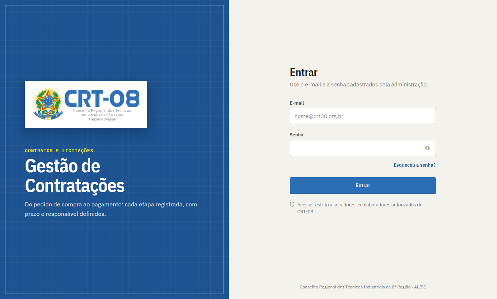
Tela de entrada.
Conhecendo a tela
Faixa escura à esquerda: os módulos do seu perfil (Mesa, Contratações, Financeiro, Licitações, Gabinete, Administração). Você só vê os seus.
Menu ao lado: as telas do módulo aberto. Um número ao lado do item indica pendências.
Barra superior: onde você está, a busca (contratação, CNPJ ou processo SEI; a tecla / leva o cursor até ela), o sino de pendências e o seu usuário (tema claro/escuro e Sair).
No celular, o botão com três traços abre o menu completo.
Minha mesa
Para Gestão, Fiscal, Financeiro e Compras, a tela inicial é a Minha mesa: só o que está esperando você, em três grupos — UrgenteAtençãoPara acompanhar. Clique em Abrir e o sistema leva direto ao ponto onde você resolve. À direita ficam atalhos do seu perfil e alguns números.
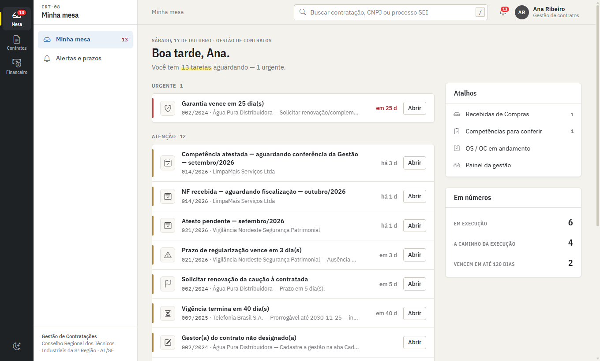
Minha mesa (exemplo: perfil Gestão).
Como ler os status
Os status aparecem como carimbos coloridos: verde = em dia/concluído · amarelo = atenção · vermelho = urgente ou problema · azul = em andamento · cinza = neutro. Em contratações e competências, o status diz com quem está a vez.
2. O caminho de uma contratação
Cada contratação (contrato, nota de empenho ou outro instrumento) passa pelos setores nesta ordem. O sistema avisa cada setor quando chega a sua vez.
Etapa
Quem age
O que acontece
1. Cadastro
Compras
Com o contrato assinado ou a nota de empenho emitida, cadastra a contratação e a encaminha à Gestão.
2. Recebimento
Gestão
Confere os dados e recebe a contratação.
3. Fiscais
Gestão
Designa o fiscal titular e o fiscal substituto.
4. Portaria
Gestão → Gabinete
Gestão gera a minuta; o Gabinete assina e publica; o número e a data da publicação são registrados.
5. Termo de ciência
Gestão
Gestor(a) e fiscais assinam o termo no SEI; a Gestão registra a ciência de cada um. A fiscalização fica formalizada.
6. OS ou OC
Gestão → Gabinete
Gestão prepara a Ordem de Serviço/Compra; Presidente e Diretor Financeiro assinam; a Gestão registra o envio à contratada e o recebimento. Começa a execução.
7. Nota fiscal e fiscalização
Fiscal
Cada mês: recebe a NF, registra, fiscaliza a execução, anota ocorrência/glosa e atesta.
8. Conferência
Gestão
Confere o fluxo (não refaz a fiscalização) e libera ao Financeiro ou devolve ao fiscal.
9. Pagamento
Financeiro
Liquidação, pagamento e acompanhamento dos saldos.
Contratações anteriores ao sistemaAs que já estavam em execução antes da plataforma entram marcadas como "já em execução": não refazem portaria, termo e OS/OC; seguem direto para as competências mensais.
Cada mês (competência)
A competência é o mês de referência de cada contratação. Seu status mostra a etapa:
Cadastra as contratações (contrato, nota de empenho ou outro instrumento) e as encaminha à Gestão.
Acompanha e controla os processos licitatórios (quadro de prioridades, prazos, fases, anexos).
Pode importar processos e contratações por planilha.
Regra importanteDepois que a contratação é encaminhada à Gestão, Compras só consulta. Corrija tudo antes de encaminhar.
Cadastrar uma contratação
Menu Contratações → + Nova contratação.
Preencha o formulário em blocos: Instrumento (tipo, número, processo SEI, objeto, modalidade, unidade demandante), Contratada (nome, CNPJ, endereço, representante, e-mail), Vigência ou prazo de execução, Valores e empenho e Garantia (se exigida). Campos com * são obrigatórios.
Clique em Criar cadastro. A ficha da contratação abre.
Dados mínimos para encaminharNº do instrumento, processo SEI, contratada, objeto, valor maior que zero e fim da vigência ou prazo de execução. Para nota de empenho, que não tem vigência, informe o prazo de execução em dias.
Cadastrar várias de uma vez (planilha)
Em Contratações, clique em Importar planilha.
Clique em Baixar modelo, preencha uma linha por contratação e salve (.xlsx ou .csv). Obrigatórias: Nº, Contratada e Objeto.
Escolha o arquivo. O sistema mostra, linha a linha, o que será importado, o que falta completar e o que será ignorado (sem número, repetida ou já cadastrada).
Confira e clique em Importar. As contratações entram em cadastro; complete os dados e encaminhe na ficha.
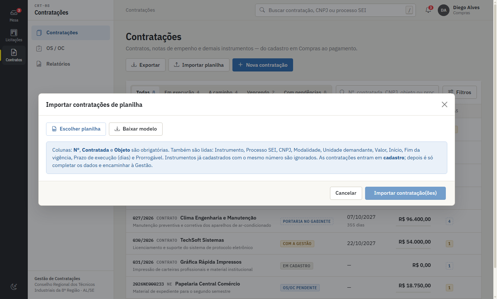
Importação de contratações por planilha.
Encaminhar à Gestão
Abra a contratação (lista de Contratações → clique na linha).
Clique em Encaminhar para Gestão, escolha se solicita Ordem de Serviço ou Ordem de Compra (nota de empenho costuma ser OC) e confirme.
O sistema cria, sozinho, a solicitação de designação dos fiscais e a solicitação da OS/OC, e avisa a Gestão.
Se faltar dado, o sistema diz o que preencher antes. Use Completar cadastro para editar enquanto não foi encaminhada.
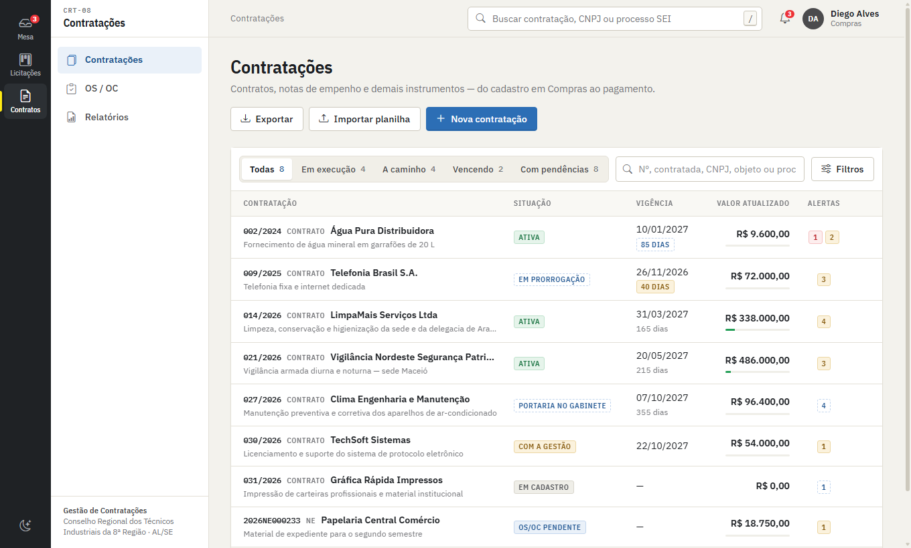
Lista de contratações: abas rápidas, busca, filtros e exportação.
Processos licitatórios
No módulo Licitações (faixa à esquerda) há quatro telas:
Quadro de prioridades: colunas por criticidade (Crítico, Estratégico, Alavancável, Não crítico). Dentro de cada coluna, os processos mais no início da documentação vêm primeiro. Clique num cartão para ver o resumo, informar em qual documentação o processo está (DFD, dotação, estudo técnico, pesquisa de preço, termo de referência, parecer jurídico) e, se for o caso, marcar como concluído.
Processos: a lista completa, com busca, filtros, exportação em Excel e PDF.
Indicadores: gráficos por tipo, por prioridade e por mês, com filtro de período e fase.
Arquivados: consulta aos arquivados; é possível desarquivar.
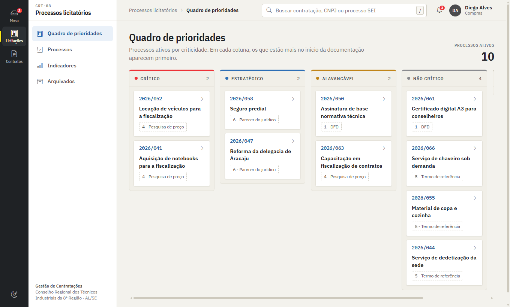
Quadro de prioridades.
Cadastrar e acompanhar um processo
Em Processos, clique em + Novo e preencha número, objeto, tipo, prioridade, prazo e responsável.
Clique na linha de um processo para abrir o detalhe, onde ficam as fases do fluxo com a data de cada uma. Os anexos ficam no formulário de edição (ícone de lápis na linha).
O status do prazo é calculado sozinho: Em diaQuase vencendo (até 3 dias) Atrasado.
Para guardar processos encerrados, marque-os na lista e use Arquivar.
Importar processos por planilha
Em Processos, clique em Importar e escolha a planilha. Colunas lidas: número do Processo, Situação no SEI, nome do Processo, Unidade Demandante, Modalidade, Valor Estimado (R$), Prioridade, Fase Atual (a ordem é livre). Processos com número já cadastrado são ignorados, e o sistema mostra um resumo para você confirmar antes de gravar.
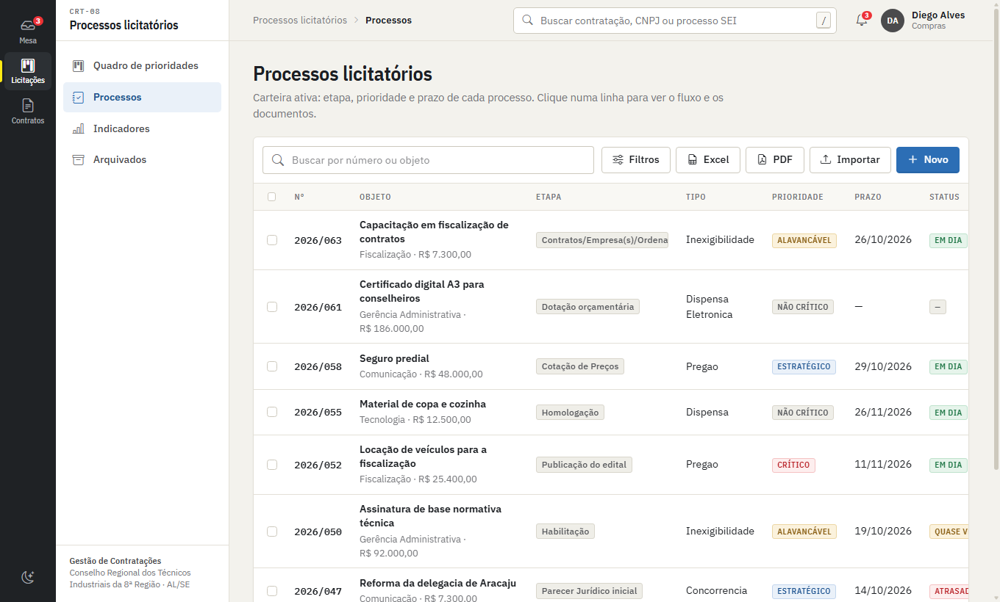
Processos: busca, filtros, importação e exportação.
Na sua mesaAparecem também os processos com prazo vencido ou que vencem em até 7 dias.
Gestão de Contratos
Perfil Gestão de contratos · Tela inicial: Minha mesa · Módulos: Mesa, Contratações, Financeiro (consulta)
O que você faz no sistema
Recebe as contratações vindas de Compras e formaliza a fiscalização: designa fiscais, prepara a portaria e o termo de ciência.
Prepara as OS/OC e registra envio e recebimento pela contratada.
Cada mês, confere as competências atestadas e as libera ao Financeiro ou devolve ao fiscal.
Registra eventos contratuais (aditivos, reajustes, prorrogações), ocorrências, pendências e documentos.
O que não é da GestãoRegistrar nota fiscal, fiscalizar e atestar são atos do fiscal. A Gestão confere o fluxo; não refaz a fiscalização.
Acompanhar pelo Painel da gestão
Em Contratações → Painel da gestão: quatro indicadores (em execução, a caminho da execução, competências do mês, pendências críticas), a régua de formalização (quantas contratações estão em cada etapa e com quem), a distribuição das competências e as vigências dos próximos 120 dias. Clique em qualquer número para ver a lista.
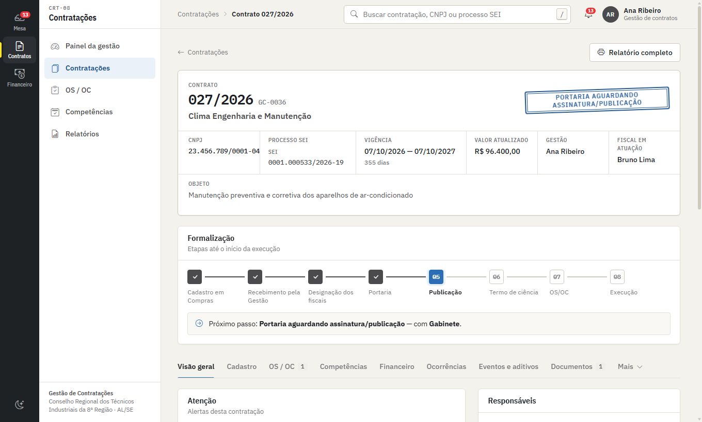
Ficha da contratação: legenda no alto, régua de formalização e abas.
1. Receber a contratação
Na Minha mesa, abra "Nova contratação recebida de Compras".
Confira os dados e clique em Receber contratação. Se algo importante estiver em branco, o sistema avisa antes de você confirmar.
2. Designar os fiscais
Na ficha, aba Cadastro, no quadro Gestão e fiscalização, clique em Designar.
Escolha o papel (gestor(a) do contrato, fiscal titular, fiscal substituto), o servidor na lista de usuários (assim a contratação aparece para ele em "Minhas fiscalizações"), e o e-mail institucional — usado na orientação de envio da nota fiscal.
São obrigatórios o fiscal titular e o fiscal substituto.
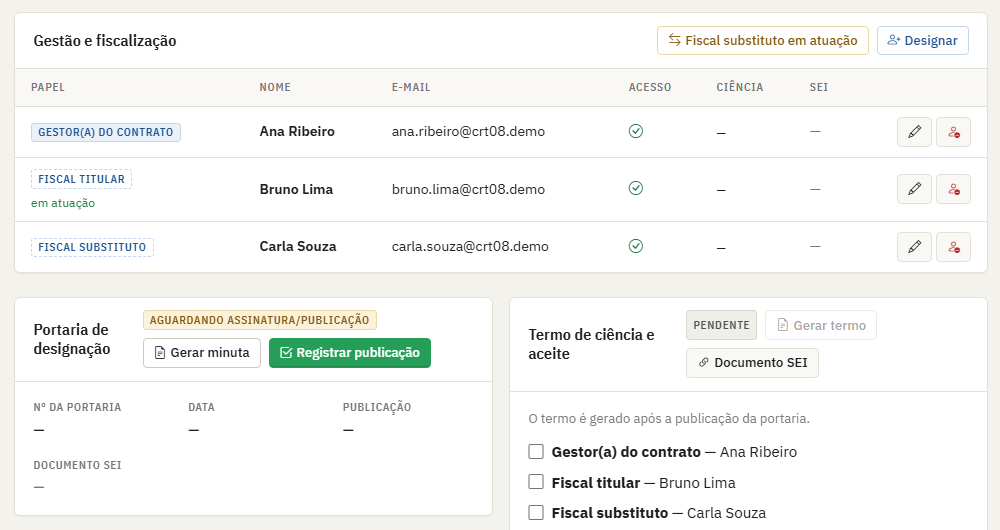
Designação dos fiscais, portaria e termo de ciência.
3. Portaria de designação
No quadro Portaria de designação, clique em Gerar minuta. O texto aparece pronto: use Copiar para o SEI ou baixe o arquivo .doc.
Clique em Encaminhar para assinatura/publicação. O Gabinete é avisado.
Quando for publicada, o Gabinete (ou você) clica em Registrar publicação e informa nº da portaria, data, data e meio da publicação e o documento SEI.
4. Termo de ciência e aceite
Com a portaria publicada, clique em Gerar termo e use o texto no SEI.
Quando cada pessoa assinar, clique em Registrar ciência ao lado do nome (gestor(a), fiscal titular e fiscal substituto) com a data da assinatura. Informe também o nº do documento SEI do termo.
Com todas as ciências registradas, a fiscalização está formalizada.
5. OS ou OC
Menu OS / OC. A solicitação de Compras aparece como Solicitada. Clique em Preparar.
Confira os requisitos (contratação recebida, fiscalização formalizada, vigência, garantia, empenho) e preencha número, data, serviço/fornecimento autorizado, período, local e preposto. Salve o rascunho (Rascunho).
Use o botão de documento para gerar o texto (com a orientação de envio da nota fiscal) e clique em Enviar para assinatura. Só é possível com a fiscalização formalizada.
O Gabinete registra as assinaturas do Presidente e do Diretor Financeiro. Quando as duas estiverem registradas, a ordem fica Assinada.
Envie à contratada e clique em Registrar envio à contratada (data e meio).
Quando a contratada confirmar, clique em Registrar recebimento com a data de recebimento e o início da execução. A contratação passa a Em execução.
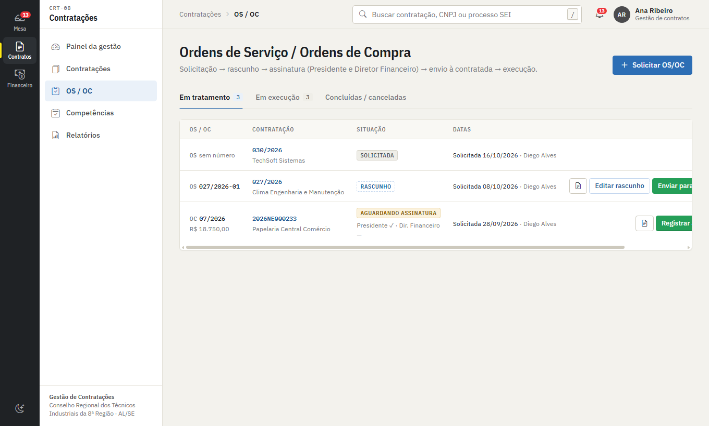
OS/OC: situação e a ação do momento em cada linha.
6. Competências mensais: abrir, conferir, liberar
Em Competências, o botão Abrir <mês> (n) abre o mês para as contratações em execução. O fiscal também pode abrir ao registrar a NF.
Quando o fiscal atesta, a competência chega a você como "Atestada — aguardando Gestão". Use o filtro Minha vez.
Clique em Tratar. No bloco Conferência da Gestão, veja a lista de conferência (NF, fiscalização, atesto, ocorrências tratadas, glosa, documentos).
Tudo certo: marque Encaminhar ao Financeiro e salve. Se algo estiver errado: Devolver ao fiscal com o motivo; a competência volta ao fiscal marcada como Devolvida pela Gestão.
7. Outros registros da ficha
Eventos e aditivos: termo aditivo, apostilamento, reajuste, repactuação, reequilíbrio, prorrogação, acréscimo, supressão, suspensão, encerramento. Ao concluir um evento, o valor e a vigência da contratação são atualizados sozinhos.
Ocorrências: registre o problema, a providência e o prazo dado à contratada.
Pendências (menu "Mais"): tarefas com prazo e perfil responsável.
Documentos: índice dos documentos SEI da contratação; os citados nos demais registros aparecem sozinhos.
Histórico (menu "Mais"): quem mudou o quê e quando, com o antes e o depois.
Fiscal substituto em atuação: quando o titular se ausenta, clique nesse botão no quadro "Gestão e fiscalização" — as tarefas passam ao substituto. Para voltar, Titular reassume.
Situação da contratação (suspensa, em prorrogação, encerrada…): em Editar cadastro.
Nada é excluídoRegistros não se apagam: ao cancelar, o sistema pede uma justificativa e o item continua no histórico como cancelado.
Alertas e relatórios
Vigência (120, 90, 60 e 30 dias), garantia, reajuste, ocorrências e prazos vencidos geram alertas na Minha mesa e em Alertas e prazos. Em Relatórios há 12 relatórios (contratos ativos, por vencer, situação financeira, pagamentos, glosas, ocorrências, prorrogações, reajustes e mais) em Tela, Excel e PDF, além do relatório individual completo de cada contratação (botão na ficha).
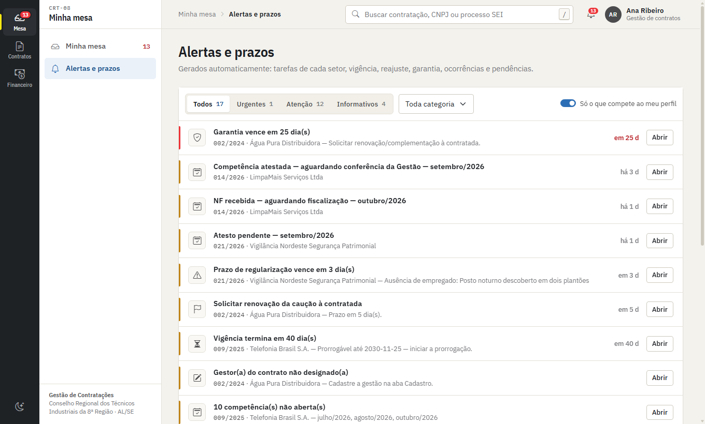
Alertas e prazos, com filtro por severidade e categoria.
Fiscais de Contrato
Perfil Fiscal · Tela inicial: Minha mesa · Módulo: Fiscalização
O que você faz no sistema
Recebe a nota fiscal de cada mês e a registra.
Fiscaliza a execução, anota ocorrência e glosa, confere a documentação e atesta.
O fiscal titular pratica esses atos. O substituto só atua quando a Gestão ou o titular o coloca "em atuação".
Você só vê o que é seuNo sistema aparecem apenas as contratações em que você foi designado(a) como fiscal. Se uma contratação sua não aparece, peça à Gestão para conferir a designação.
Minhas fiscalizações
No módulo Fiscalização, Minhas fiscalizações lista as suas contratações. Clique numa linha para abrir a ficha: a Visão geral mostra os alertas, as competências recentes, os responsáveis, os prazos e os valores.
Registrar a nota fiscal do mês
A contratada envia a nota fiscal ao e-mail do fiscal titular, com cópia para a Gestão (a orientação consta na OS/OC).
Em Competências, clique em Registrar NF.
Escolha a contratação e informe a competência (mês de referência), a data de recebimento, o nº da NF, a data de emissão e o valor bruto.
Clique em Registrar NF. A competência é aberta (ou completada, se a Gestão já a tinha aberto) com o status "NF recebida — aguardando fiscalização". Se a NF do mês já foi registrada, o sistema avisa para não duplicar.
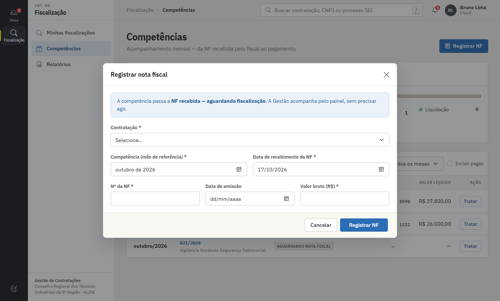
Registro da nota fiscal.
Fiscalizar e atestar
Em Competências use Minha vez e clique em Tratar na competência.
O formulário tem seções numeradas, com um sumário no alto para pular de uma para outra:
01 Nota fiscal — confira os dados.
02 Fiscalização da execução — execução realizada? conforme contrato/TR/OS? quantidade e qualidade adequadas? prazo cumprido? valor medido (se houver medição), sua manifestação e o relatório (nº SEI). Marque Fiscalização concluída e a data.
03 Ocorrência — se houve, marque e informe tipo, descrição, providência e prazo dado à contratada.
04 Glosa — se houver desconto, informe valor e fundamento.
05 Documentação — certidões, documentação trabalhista/previdenciária e demais documentos conferidos.
06 Atesto — clique em Gerar atesto, copie o texto para o SEI, assine, e registre aqui a data e o nº do documento SEI; marque Atestado.
Clique em Salvar. A competência segue para a conferência da Gestão.
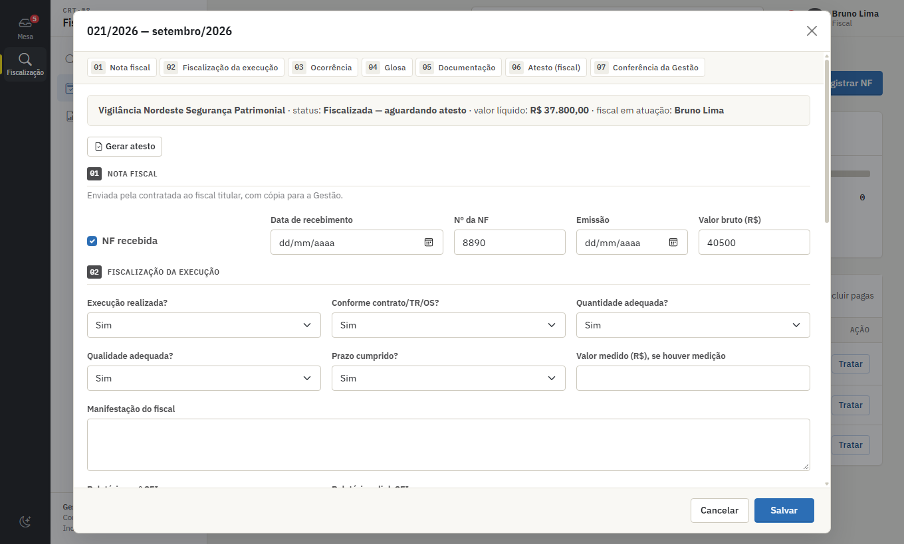
Competência: seções numeradas e sumário no topo.
Em cada etapa o sistema só deixa mexer no que é seuAs seções da Gestão e do Financeiro aparecem bloqueadas para você.
Se a Gestão devolver
A competência volta com o carimbo Devolvida pela Gestão e o motivo. Corrija, atese de novo e salve.
Fiscal substituto em atuação
Na ficha, aba Cadastro, o botão Fiscal substituto em atuação (do titular ou do substituto) passa as tarefas ao substituto; Titular reassume devolve ao titular. Enquanto o substituto não estiver em atuação, ele só consulta.
Ocorrências e documentos
Na ficha: aba Ocorrências para registrar e acompanhar problemas e prazos dados à contratada; aba Documentos para registrar documentos SEI relacionados.
Alertas que você recebe
Nova contratação atribuída a você.
Nota fiscal não recebida (cobrada depois que o mês termina).
Lança a liquidação e o pagamento das competências que a Gestão liberou.
Acompanha os saldos.
Só o que foi liberadoVocê só lança liquidação e pagamento de competências que passaram pela fiscalização, pelo atesto e pela conferência da Gestão.
Painel financeiro
No módulo Financeiro, a faixa no alto mostra o dinheiro em sequência: Contratado → Empenhado → Reconhecido → Liquidado → Pago, com o saldo a liquidar e o valor aguardando pagamento. O sistema mantém cada valor separado (não existe um "saldo" único): valor do contrato, empenhos, executado reconhecido, liquidado, pago e pendente.
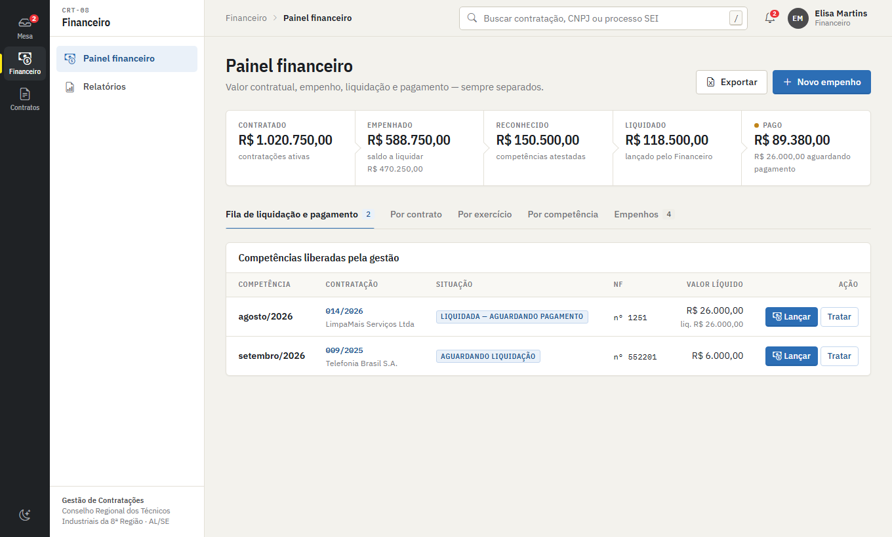
Painel financeiro e fila de liquidação e pagamento.
Lançar liquidação e pagamento
Aba Fila de liquidação e pagamento: são as competências liberadas pela Gestão.
Clique em Lançar na linha.
Preencha: Empenho utilizado (a lista mostra o saldo de cada um), valor da competência e retenções; Liquidação (data, valor, documento SEI); Pagamento (data e valor pago). Marque Pagamento suspenso se for o caso.
Salve. Você pode lançar a liquidação agora e o pagamento depois, voltando em Lançar.
Saldo do empenhoSe a liquidação passar do saldo do empenho, o sistema gera um alerta. Confira o empenho escolhido.
Empenhos
No painel, + Novo empenho: escolha a contratação, informe nº, exercício, data, valor inicial e fonte/dotação.
Na ficha da contratação, aba Financeiro, cada empenho tem os botões Reforço, Anulação, Editar e Cancelar empenho (com justificativa).
Outras consultas
Abas Por contrato, Por exercício, Por competência e Empenhos do painel; botão Exportar gera Excel.
Relatórios: situação financeira por contrato, pagamentos por competência e por contratada, execução anual.
Alertas do Financeiro: nova competência liberada, pagamento pendente, empenho com saldo negativo, contratação sem empenho no exercício.
Gabinete
Perfil Gabinete · Tela inicial: Atos para assinatura
O que você faz no sistema
Registra a assinatura e a publicação das portarias de designação dos fiscais.
Registra as assinaturas das OS/OC (Presidente e Diretor Financeiro).
Você vê só o seuO Gabinete enxerga apenas os atos encaminhados a ele. Quando a Gestão encaminha, o sistema avisa (sino e número no módulo).
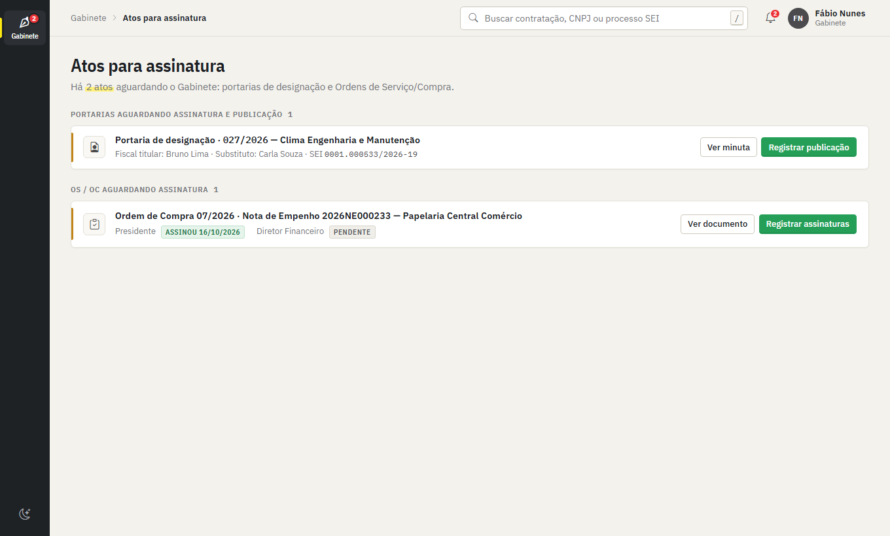
Atos para assinatura.
Portaria aguardando assinatura e publicação
Em Atos para assinatura, veja a portaria com os fiscais designados e o processo SEI. Ver minuta abre o texto.
Depois de assinada e publicada, clique em Registrar publicação.
Informe o nº da portaria, a data da portaria, a data da publicação, o meio (Diário Oficial, boletim interno, site…) e o nº do documento SEI. Confirme.
A partir daí a Gestão segue com o termo de ciência.
OS/OC aguardando assinatura
Na lista de OS/OC, Ver documento mostra o texto.
Quando assinar, clique em Registrar assinaturas e informe a data da assinatura do Presidente e a do Diretor Financeiro (pode registrar uma agora e a outra depois), mais o nº do documento SEI.
Quando as duas assinaturas estão registradas, a ordem passa a Assinada e volta à Gestão para o envio à contratada.
Administração do sistema
Perfil Administrador · Módulo: Administração (e acesso a todos os demais)
O que você faz no sistema
Cria os acessos, define o perfil de cada pessoa e ativa/desativa.
Mantém os parâmetros: prazos de alerta, listas de opções e dados que saem nos documentos.
Usuários e perfis
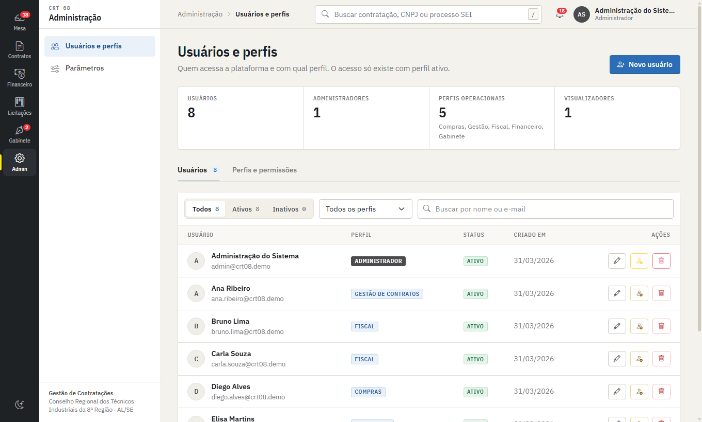
Administração → Usuários e perfis.
Criar um acesso
Administração → Usuários e perfis → Novo usuário.
Informe nome completo, e-mail, uma senha temporária (mínimo de 8 caracteres) e o perfil.
A pessoa recebe um e-mail de confirmação; o acesso funciona depois que ela clicar no link. Depois ela pode trocar a senha por "Esqueceu a senha?".
Manter os acessos
Editar: muda nome e perfil (o e-mail não muda). A mudança vale na hora, também no banco de dados.
Desativar / reativar: bloqueia o acesso sem apagar o histórico. Prefira isto a apagar.
Apagar: remove o perfil e bloqueia o acesso imediatamente.
Você não pode desativar, apagar nem mudar o perfil do próprio usuário.
Use os filtros Todos / Ativos / Inativos, o filtro por perfil e a busca. A aba Perfis e permissões mostra o que cada perfil faz e quem o tem.
Perfis disponíveis
Perfil
O que pode
Compras
Cadastra e encaminha contratações; opera os processos licitatórios.
Só as contratações em que está designado: NF, fiscalização, glosa e atesto.
Financeiro
Empenhos, liquidação, pagamento e saldos.
Gabinete
Assina/publica portarias e assina OS/OC; vê só esses atos.
Administrador
Tudo, mais usuários e parâmetros.
Visualizador
Somente consulta.
Para ser fiscal de uma contrataçãoO usuário precisa ter o perfil Fiscal e ser designado na contratação pela Gestão. Sem os dois, ele não vê a contratação.
Parâmetros
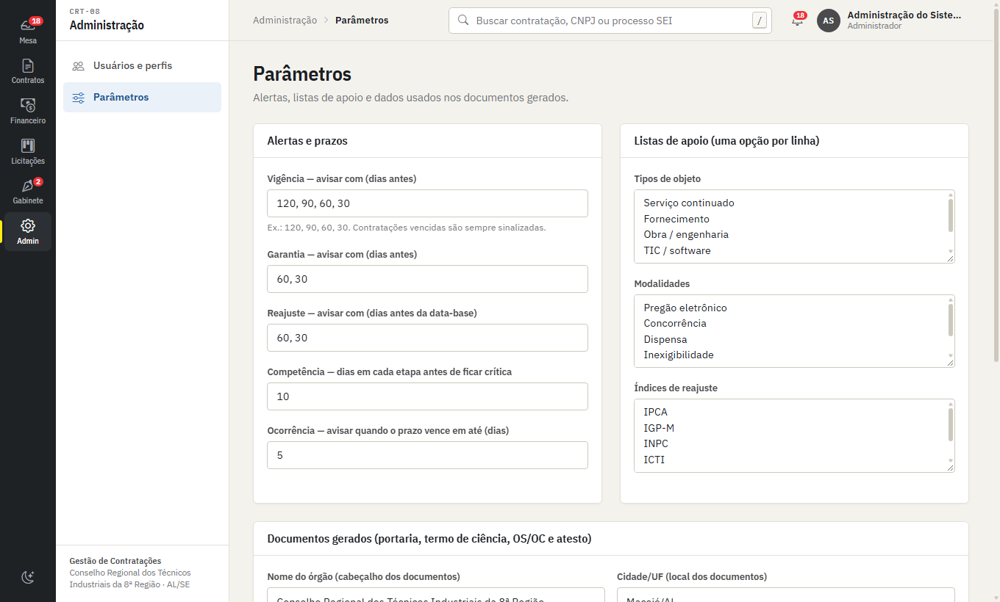
Administração → Parâmetros.
Alertas e prazos: com quantos dias avisar vigência, garantia e reajuste; quantos dias uma competência pode ficar parada em cada etapa antes de ficar crítica; aviso de prazo de ocorrência.
Listas de apoio: tipos de objeto, modalidades e índices de reajuste (uma opção por linha).
Documentos gerados: nome do órgão, cidade/UF, Presidente, Diretor(a) Financeiro(a), e-mail institucional da Gestão (cópia das NFs) e as atribuições da fiscalização que saem na portaria.
Preencha antes de usarOs dados de "Documentos gerados" aparecem na portaria, no termo, nas OS/OC e no atesto. Preencha o nome completo do órgão, a cidade e os nomes do Presidente e do Diretor Financeiro antes de gerar o primeiro documento.
Auditoria
Cada alteração nas contratações fica registrada (quem, quando, antes e depois) na aba Histórico da ficha. Registros não são excluídos.
Consulta (Visualizador)
Perfil Visualizador · Somente leitura
Este perfil serve para acompanhar sem alterar nada. Você vê as contratações, os painéis da gestão e financeiro, OS/OC, competências, alertas, relatórios e os processos licitatórios. Os botões de cadastrar, editar, lançar e registrar não aparecem para você.
Contratações: lista com abas rápidas (Todas, Em execução, A caminho, Vencendo, Com pendências), busca e filtros. Clique para abrir a ficha completa.
Painéis: Painel da gestão e Painel financeiro.
Relatórios: 12 relatórios em tela, Excel e PDF, e o relatório individual de cada contratação.
Licitações: quadro de prioridades, processos, indicadores e arquivados.
Regras e dúvidas frequentes
Regras que valem para todos
Nada é apagado. Contratações, competências, OS/OC, empenhos e demais registros são cancelados com justificativa e continuam no histórico. Só os processos licitatórios podem ser excluídos, por Compras.
Cada setor faz o seu ato. O sistema bloqueia o que não é do seu perfil, mesmo que alguém tente por outro caminho.
O SEI continua sendo o registro oficial. O sistema guarda o número e o link do documento SEI de cada ato e ajuda a gerar os textos (portaria, termo, OS/OC, atesto): use Copiar para o SEI ou baixe o arquivo.
Ações importantes pedem confirmação e, ao cancelar, uma justificativa.
Dúvidas frequentes
Não vejo uma contratação.
Fiscal: você só vê as em que foi designado — peça à Gestão para conferir. Gabinete: só aparecem os atos encaminhados a você. Outros perfis: confira os filtros da lista (botão Limpar busca e filtros).
Não aparece o botão que eu preciso.
O botão depende do perfil e da etapa. Exemplo: Compras não edita depois de encaminhar; a OS/OC só segue para assinatura com a fiscalização formalizada; o substituto só atua quando está "em atuação".
Errei um dado. Como corrijo?
Edite o registro enquanto o seu perfil puder (Editar). Se já não puder, peça ao setor que está com a vez ou à Gestão. Para desfazer um lançamento, cancele-o com justificativa.
A página mostra "Banco de dados ainda não preparado" ou erro ao carregar.
Avise a administração do sistema. Verifique também sua conexão e clique em Tentar novamente.
Recebo e-mails do sistema?
Quando o envio de e-mails estiver ativado pela administração, cada tarefa nova que aguarda sua atuação gera um aviso por e-mail. Os mesmos avisos sempre aparecem na Minha mesa.
Posso usar no celular?
Sim. O menu abre pelo botão de três traços; as tabelas rolam para o lado quando necessário.